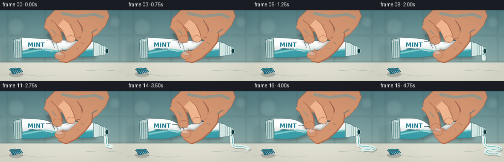
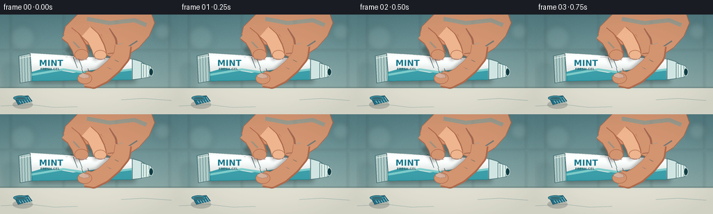

CODING AGENTS AS PIXEL WORLD MODELS
traex/GPT-5.6-Sol · mechanics_0020
点击播放 · 原生 RGB 像素
逐轮保存的候选
回放视频、检查图与代码变化。
每份候选均可单独播放。实际图片检查记录在下方工具轨迹中。
候选 01播放与检查图
点击播放 · 原生 RGB 像素


展开代码变化
--- 上一保存版本
+++ 本次保存版本
@@ -0,0 +1,269 @@
+from pathlib import Path
+import math
+import numpy as np
+from PIL import Image, ImageDraw, ImageFont, ImageFilter
+import artifact_io
+
+W, H, N = 256, 144, 20
+S = 4
+SW, SH = W*S, H*S
+rng = np.random.default_rng(20261110)
+static_noise = rng.normal(0, 1.4, (SH, SW, 1)).astype(np.float32)
+
+
+def sc(v): return int(round(v*S))
+def pts(seq): return [(sc(x), sc(y)) for x, y in seq]
+def line(draw, seq, fill, width, joint='curve'):
+ draw.line(pts(seq), fill=fill, width=max(1, sc(width)), joint=joint)
+def ellipse(draw, box, fill, outline=None, width=1):
+ draw.ellipse(tuple(sc(v) for v in box), fill=fill, outline=outline, width=sc(width) if outline else 1)
+def polygon(draw, seq, fill, outline=None, width=1):
+ draw.polygon(pts(seq), fill=fill)
+ if outline:
+ draw.line(pts(list(seq)+[seq[0]]), fill=outline, width=sc(width), joint='curve')
+def rounded(draw, box, radius, fill, outline=None, width=1):
+ draw.rounded_rectangle(tuple(sc(v) for v in box), radius=sc(radius), fill=fill,
+ outline=outline, width=sc(width) if outline else 1)
+
+def font(size, bold=False):
+ name = '/usr/share/fonts/truetype/dejavu/DejaVuSans-Bold.ttf' if bold else '/usr/share/fonts/truetype/dejavu/DejaVuSans.ttf'
+ return ImageFont.truetype(name, sc(size))
+
+
+def base_scene(frame_index):
+ # Cool bathroom wall with a warm, clean stone counter.
+ yy = np.linspace(0, 1, SH)[:, None, None]
+ top = np.array([83, 126, 132], dtype=np.float32)
+ bot = np.array([159, 186, 181], dtype=np.float32)
+ arr = top[None,None,:]*(1-yy) + bot[None,None,:]*yy
+ arr = np.broadcast_to(arr, (SH, SW, 3)).copy()
+ # static film grain and a tiny timelapse exposure pulse
+ pulse = 1.0 + 0.012*math.sin(frame_index*1.75)
+ arr = arr*pulse + static_noise
+ arr = np.uint8(np.clip(arr, 0, 255))
+ im = Image.fromarray(arr, 'RGB').convert('RGBA')
+
+ # Defocused tiled backsplash.
+ tile = Image.new('RGBA', (SW, SH), (0,0,0,0))
+ td = ImageDraw.Draw(tile)
+ for x in [15, 91, 167, 243]:
+ line(td, [(x,0),(x,106)], (55,97,102,50), 1.2)
+ line(td, [(x+1.8,0),(x+1.8,106)], (208,230,224,38), .8)
+ line(td, [(0,51),(256,51)], (52,94,100,45), 1.3)
+ line(td, [(0,52.6),(256,52.6)], (215,233,226,35), .8)
+ tile = tile.filter(ImageFilter.GaussianBlur(sc(1.15)))
+ im = Image.alpha_composite(im, tile)
+
+ d = ImageDraw.Draw(im)
+ # Soft blurred shelf objects / bathroom bokeh.
+ bokeh = Image.new('RGBA', (SW,SH), (0,0,0,0)); bd=ImageDraw.Draw(bokeh)
+ ellipse(bd, (14,15,51,52), (210,234,225,27))
+ ellipse(bd, (220,11,246,37), (227,242,232,31))
+ rounded(bd, (5,72,24,108), 5, (54,105,108,42))
+ bokeh=bokeh.filter(ImageFilter.GaussianBlur(sc(4)))
+ im=Image.alpha_composite(im,bokeh)
+
+ # Counter and raised backsplash lip.
+ counter = Image.new('RGBA',(SW,SH),(0,0,0,0)); cd=ImageDraw.Draw(counter)
+ polygon(cd, [(0,105),(256,105),(256,144),(0,144)], (223,222,208,255))
+ line(cd, [(0,105),(256,105)], (76,96,92,80), 2.0)
+ line(cd, [(0,108),(256,108)], (248,245,228,180), 1.0)
+ # slight stone veins
+ line(cd, [(1,132),(44,130),(78,134),(111,133)], (164,166,154,42), .65)
+ line(cd, [(174,123),(206,121),(246,124)], (164,166,154,35), .65)
+ im=Image.alpha_composite(im,counter)
+ return im
+
+
+def tube_bounds(x, p):
+ # Laminated tube becomes sharply pinched under increasing pressure.
+ c = 75.5 + .024*(x-42)
+ h = 20.5 - .037*(x-42)
+ pinch = math.exp(-((x-119)/21.0)**2)
+ left_bulge = math.exp(-((x-73)/23.0)**2)
+ right_bulge = math.exp(-((x-159)/27.0)**2)
+ h *= (1 + .095*p*(left_bulge + .65*right_bulge)) * (1 - .79*p*pinch)
+ # The top surface follows the downward finger more than the bottom.
+ c += 2.1*p*pinch
+ return c-h, c+h
+
+
+def draw_cap(im):
+ layer=Image.new('RGBA',(SW,SH),(0,0,0,0)); d=ImageDraw.Draw(layer)
+ # shadow and detached ribbed cap at lower left
+ ellipse(d,(18,124,47,136),(65,74,69,65))
+ polygon(d,[(20,119),(40,117),(46,125),(26,130)],(34,113,138,255),(20,76,94,255),.8)
+ for j in range(5):
+ line(d,[(24+j*4,119),(30+j*4,128)],(130,202,211,150),.75)
+ ellipse(d,(19,117,40,124),(63,151,169,255),(23,85,101,255),.8)
+ ellipse(d,(22,119,37,122.5),(24,83,99,210))
+ im.alpha_composite(layer)
+
+
+def draw_paste(im, amount):
+ if amount <= 0: return
+ full=[(211.5,84.7),(214.0,90),(215.2,96),(215.0,103),(216.8,109),
+ (223,112),(232,111.5),(241,113),(249,116),(243,119),(233,118),
+ (222,119.5),(218,123),(225,126),(237,125),(247,128)]
+ # Interpolate along the polyline for smooth progressive extrusion.
+ lengths=[]; total=0
+ for a,b in zip(full[:-1],full[1:]):
+ total += math.hypot(b[0]-a[0],b[1]-a[1]); lengths.append(total)
+ target=max(1.5, total*amount)
+ out=[full[0]]; prev=0
+ for k,(a,b) in enumerate(zip(full[:-1],full[1:])):
+ seg=lengths[k]-prev
+ if target >= lengths[k]: out.append(b)
+ elif target > prev:
+ q=(target-prev)/seg; out.append((a[0]+q*(b[0]-a[0]),a[1]+q*(b[1]-a[1]))); break
+ else: break
+ prev=lengths[k]
+ layer=Image.new('RGBA',(SW,SH),(0,0,0,0)); d=ImageDraw.Draw(layer)
+ # cast shadow, glossy cyan-white striped paste
+ sh=[(x+1.5,y+2.0) for x,y in out]
+ line(d,sh,(67,80,75,75),7.5)
+ line(d,out,(229,247,242,255),7.0)
+ line(d,[(x-.5,y-.4) for x,y in out],(255,255,250,220),2.0)
+ line(d,[(x+.9,y+.5) for x,y in out],(85,186,192,190),1.35)
+ x,y=out[-1]; ellipse(d,(x-3.5,y-3.5,x+3.5,y+3.5),(225,246,240,255))
+ ellipse(d,(x-2.3,y-2.6,x+1.2,y+.2),(255,255,253,210))
+ im.alpha_composite(layer)
+
+
+def draw_tube(im,p):
+ xs=np.linspace(42,192,76)
+ top=[(float(x),tube_bounds(float(x),p)[0]) for x in xs]
+ bot=[(float(x),tube_bounds(float(x),p)[1]) for x in xs[::-1]]
+ shape=top+bot
+ # broad tube shadow onto the counter/backdrop
+ shadow=Image.new('RGBA',(SW,SH),(0,0,0,0)); sd=ImageDraw.Draw(shadow)
+ polygon(sd,[(x+2,y+4) for x,y in shape],(26,43,42,95))
+ shadow=shadow.filter(ImageFilter.GaussianBlur(sc(3.2))); im.alpha_composite(shadow)
+
+ mask=Image.new('L',(SW,SH),0); md=ImageDraw.Draw(mask); polygon(md,shape,255)
+ yy=np.arange(SH)[:,None]/S
+ # soft pearl plastic vertical lighting
+ lum=218 + 30*np.exp(-((yy-64)/12)**2) - 19*np.exp(-((yy-96)/8)**2)
+ grad=np.zeros((SH,SW,4),dtype=np.uint8)
+ grad[:,:,0]=np.clip(lum+7,0,255); grad[:,:,1]=np.clip(lum+11,0,255); grad[:,:,2]=np.clip(lum+9,0,255); grad[:,:,3]=255
+ body=Image.fromarray(grad,'RGBA'); body.putalpha(mask); im.alpha_composite(body)
+ d=ImageDraw.Draw(im)
+ line(d,top,(117,145,145,190),1.0); line(d,list(reversed(bot)),(86,112,113,210),1.15)
+
+ # sealed, corrugated tail
+ polygon(d,[(27,59.5),(43,56),(46,96),(29,99)],(179,204,201,255),(70,110,114,255),.9)
+ for x in [31,35,39,43]: line(d,[(x,60),(x+1,97)],(91,139,142,150),.75)
+ line(d,[(28,63),(44,60)],(245,251,244,180),1)
+
+ # Printed branding clipped cleanly to the changing tube silhouette.
+ label=Image.new('RGBA',(SW,SH),(0,0,0,0)); ld=ImageDraw.Draw(label)
+ polygon(ld,[(45,83),(65,77),(105,84),(148,78),(189,81),(189,98),(45,98)],(29,145,158,215))
+ line(ld,[(45,87),(91,79),(137,86),(190,79)],(73,191,189,165),3.2)
+ ld.text((sc(56),sc(63)),"MINT",font=font(12,True),fill=(24,119,139,255),stroke_width=sc(.3),stroke_fill=(255,255,255,140))
+ ld.text((sc(58),sc(76)),"FRESH GEL",font=font(4.4,True),fill=(40,83,92,235))
+ # leaf emblem
+ ellipse(ld,(155,61,177,82),(239,250,242,235),(41,145,145,220),.8)
+ polygon(ld,[(160,74),(166,64),(172,65),(168,72)],(36,155,142,240))
+ line(ld,[(161,76),(171,65)],(24,112,111,230),.8)
+ label.putalpha(Image.composite(label.getchannel('A'),Image.new('L',(SW,SH),0),mask))
+ im.alpha_composite(label)
+
+ d=ImageDraw.Draw(im)
+ # Increasing foil creases around the pinch reveal the pressure.
+ alpha=int(55+150*p)
+ for off,sgn in [(-14,-1),(-7,1),(3,-1),(12,1)]:
+ x=119+off
+ t,b=tube_bounds(x,p)
+ if off<2:
+ line(d,[(x-11,t-2*sgn),(x,t+2),(x+6,(t+b)/2)],(66,103,107,alpha),.65+0.55*p)
+ else:
+ line(d,[(x+8,b+1*sgn),(x,b-2),(x-5,(t+b)/2)],(71,104,105,alpha),.65+0.55*p)
+ # specular folded ridges
+ line(d,[(86,tube_bounds(86,p)[0]+4),(103,tube_bounds(103,p)[0]+2),(115,tube_bounds(115,p)[0]+1)],(255,255,255,155),1.0)
+ line(d,[(127,tube_bounds(127,p)[1]-1),(146,tube_bounds(146,p)[1]-3)],(255,255,252,125),.8)
+
+ # Shoulder, threaded neck, and open nozzle.
+ polygon(d,[(190,tube_bounds(190,p)[0]),(202,67.5),(211,73.5),(211,88),(202,92.5),(190,tube_bounds(190,p)[1])],
+ (208,229,226,255),(71,112,116,255),.9)
+ polygon(d,[(203,70),(216,74),(218,78),(218,86),(215,90),(203,92)],(221,237,232,255),(58,103,108,255),.8)
+ for x in [206,210,214]: line(d,[(x,72.5),(x,90)],(94,143,145,150),.7)
+ ellipse(d,(213.5,77,220,88.7),(47,91,96,255),(225,242,236,255),.8)
+ ellipse(d,(215,78.6,219.5,87),(17,60,67,245))
+
+
+def draw_hand(im,p):
+ # Contact shadow emphasizing squeeze force.
+ layer=Image.new('RGBA',(SW,SH),(0,0,0,0)); d=ImageDraw.Draw(layer)
+ top119=tube_bounds(119,p)[0]; top145=tube_bounds(145,p)[0]; bottom125=tube_bounds(125,p)[1]
+ tip1=top119+2.7; tip2=top145+1.8; thumb_y=bottom125-1.3
+ line(d,[(101,43+p*4),(112,54+p*7),(118,tip1)],(47,44,36,95),22)
+ line(d,[(128,40+p*3),(140,53+p*6),(144,tip2)],(47,44,36,82),19)
+ line(d,[(171,48),(159,73),(143,89),(123,thumb_y)],(47,44,36,85),23)
+ layer=layer.filter(ImageFilter.GaussianBlur(sc(2.2))); im.alpha_composite(layer)
+
+ skin=(211,148,112,255); skin_dark=(174,105,75,255); skin_light=(238,181,142,255)
+ hand=Image.new('RGBA',(SW,SH),(0,0,0,0)); d=ImageDraw.Draw(hand)
+ # palm and wrist entering from above-right
+ palm=[(119,-8),(215,-8),(222,12),(214,31),(199,48),(179,61),(159,61),(144,54),(128,44),(105,38),(91,29),(94,17)]
+ polygon(d,palm,skin,skin_dark,1.0)
+ # palm warm gradient illusion / knuckle highlights
+ line(d,[(125,6),(157,12),(193,8),(210,15)],(242,187,149,110),6)
+ line(d,[(151,53),(174,53),(197,38)],(137,78,61,85),2.1)
+ line(d,[(145,43),(162,46),(176,41)],(232,172,136,130),1.2)
+
+ # Index finger, slightly flattening at the contact surface.
+ path1=[(96,27+p*1.5),(106,35+p*3),(114,48+p*6),(117,tip1-5)]
+ line(d,path1,skin_dark,22.5); line(d,[(x-1,y-1) for x,y in path1],skin,20)
+ ellipse(d,(107,tip1-13,127,tip1+3),skin,skin_dark,.7)
+ line(d,[(105,39+p*3),(114,48+p*5)],(240,183,145,125),2.2)
+ # Middle finger adds visible increasing pressure nearby.
+ path2=[(124,25+p),(134,34+p*2),(141,48+p*5),(144,tip2-5)]
+ line(d,path2,skin_dark,20.5); line(d,[(x-.5,y-.6) for x,y in path2],skin_light,18.2)
+ ellipse(d,(135,tip2-12,153,tip2+2),skin_light,skin_dark,.7)
+ # hint of ring finger behind
+ line(d,[(151,24),(160,37),(162,56+p*4)],(169,101,75,230),16)
+ line(d,[(150,23),(158,37),(160,55+p*4)],skin,14)
+
+ # Thumb curls under the tube toward the pinch; it is the opposing force.
+ thumb=[(177,45),(175,60),(163,75),(148,88),(134,95),(123,thumb_y)]
+ line(d,thumb,skin_dark,24.5); line(d,[(x-.8,y-.8) for x,y in thumb],skin,21.5)
+ ellipse(d,(111,thumb_y-9,132,thumb_y+7),skin,skin_dark,.7)
+ # Thumbnail and subtle joint folds
+ nail_y=thumb_y-5
+ polygon(d,[(113,nail_y-1),(119,nail_y-4),(127,nail_y-1),(128,nail_y+3),(120,nail_y+4),(114,nail_y+2)],
+ (236,181,157,220),(172,106,87,180),.55)
+ line(d,[(154,76),(160,79)],(137,78,61,105),.8)
+ line(d,[(164,65),(170,68)],(137,78,61,95),.8)
+ # contact compression shadows
+ line(d,[(108,tip1+1),(125,tip1+2)],(117,70,56,120),1.2)
+ line(d,[(136,tip2),(151,tip2+1)],(117,70,56,110),1.0)
+ im.alpha_composite(hand)
+
+
+def make_frame(i):
+ t=i/(N-1)
+ # accelerating timelapse pressure curve, already lightly gripping in frame 0
+ p=0.035 + 0.965*(t**1.72)
+ amount=max(0.0,(p-.10)/.90)**1.18
+ im=base_scene(i)
+ draw_cap(im)
+ # Paste lies behind the open nozzle, but in front of the counter.
+ draw_paste(im,amount)
+ draw_tube(im,p)
+ draw_hand(im,p)
+ # tiny cinematic vignette, same physical camera throughout
+ a=np.zeros((SH,SW),dtype=np.uint8)
+ yy,xx=np.ogrid[:SH,:SW]
+ nx=(xx-SW/2)/(SW/2); ny=(yy-SH/2)/(SH/2)
+ a[:]=np.uint8(np.clip((nx*nx+ny*ny-.35)*17,0,18))
+ vig=Image.new('RGBA',(SW,SH),(17,29,29,0)); vig.putalpha(Image.fromarray(a,'L'))
+ im=Image.alpha_composite(im,vig)
+ return np.asarray(im.convert('RGB').resize((W,H),Image.Resampling.LANCZOS),dtype=np.uint8)
+
+
+def main():
+ frames=np.stack([make_frame(i) for i in range(N)],axis=0)
+ artifact_io.save(frames,Path(__file__).resolve().parent)
+
+if __name__=='__main__':
+ main()
可观测工具轨迹
实际执行的命令与返回图片。
命令 1exit 0
/bin/bash -lc "cat prompt.txt && printf '\\n---RULES---\\n' && cat GENERATION_RULES.md && printf '\\n---SPEC---\\n' && cat task_spec.json"
命令 2exit 0
/bin/bash -lc "find . -maxdepth 2 -type f -printf '%p\\n' | sort"
命令 3exit 0
/bin/bash -lc 'cat artifact_io.py'
命令 4exit 0
/bin/bash -lc "cat > generate.py <<'PY'
from pathlib import Path
import math
import numpy as np
from PIL import Image, ImageDraw, ImageFont, ImageFilter
import artifact_io
W, H, N = 256, 144, 20
S = 4
SW, SH = W*S, H*S
rng = np.random.default_rng(20261110)
static_noise = rng.normal(0, 1.4, (SH, SW, 1)).astype(np.float32)
def sc(v): return int(round(v*S))
def pts(seq): return [(sc(x), sc(y)) for x, y in seq]
def line(draw, seq, fill, width, joint='curve'):
draw.line(pts(seq), fill=fill, width=max(1, sc(width)), joint=joint)
def ellipse(draw, box, fill, outline=None, width=1):
draw.ellipse(tuple(sc(v) for v in box), fill=fill, outline=outline, width=sc(width) if outline else 1)
def polygon(draw, seq, fill, outline=None, width=1):
draw.polygon(pts(seq), fill=fill)
if outline:
draw.line(pts(list(seq)+[seq[0]]), fill=outline, width=sc(width), joint='curve')
def rounded(draw, box, radius, fill, outline=None, width=1):
draw.rounded_rectangle(tuple(sc(v) for v in box), radius=sc(radius), fill=fill,
outline=outline, width=sc(width) if outline else 1)
def font(size, bold=False):
name = '/usr/share/fonts/truetype/dejavu/DejaVuSans-Bold.ttf' if bold else '/usr/share/fonts/truetype/dejavu/DejaVuSans.ttf'
return ImageFont.truetype(name, sc(size))
def base_scene(frame_index):
# Cool bathroom wall with a warm, clean stone counter.
yy = np.linspace(0, 1, SH)[:, None, None]
top = np.array([83, 126, 132], dtype=np.float32)
bot = np.array([159, 186, 181], dtype=np.float32)
arr = top[None,None,:]*(1-yy) + bot[None,None,:]*yy
arr = np.broadcast_to(arr, (SH, SW, 3)).copy()
# static film grain and a tiny timelapse exposure pulse
pulse = 1.0 + 0.012*math.sin(frame_index*1.75)
arr = arr*pulse + static_noise
arr = np.uint8(np.clip(arr, 0, 255))
im = Image.fromarray(arr, 'RGB').convert('RGBA')
# Defocused tiled backsplash.
tile = Image.new('RGBA', (SW, SH), (0,0,0,0))
td = ImageDraw.Draw(tile)
for x in [15, 91, 167, 243]:
line(td, [(x,0),(x,106)], (55,97,102,50), 1.2)
line(td, [(x+1.8,0),(x+1.8,106)], (208,230,224,38), .8)
line(td, [(0,51),(256,51)], (52,94,100,45), 1.3)
line(td, [(0,52.6),(256,52.6)], (215,233,226,35), .8)
tile = tile.filter(ImageFilter.GaussianBlur(sc(1.15)))
im = Image.alpha_composite(im, tile)
d = ImageDraw.Draw(im)
# Soft blurred shelf objects / bathroom bokeh.
bokeh = Image.new('RGBA', (SW,SH), (0,0,0,0)); bd=ImageDraw.Draw(bokeh)
ellipse(bd, (14,15,51,52), (210,234,225,27))
ellipse(bd, (220,11,246,37), (227,242,232,31))
rounded(bd, (5,72,24,108), 5, (54,105,108,42))
bokeh=bokeh.filter(ImageFilter.GaussianBlur(sc(4)))
im=Image.alpha_composite(im,bokeh)
# Counter and raised backsplash lip.
counter = Image.new('RGBA',(SW,SH),(0,0,0,0)); cd=ImageDraw.Draw(counter)
polygon(cd, [(0,105),(256,105),(256,144),(0,144)], (223,222,208,255))
line(cd, [(0,105),(256,105)], (76,96,92,80), 2.0)
line(cd, [(0,108),(256,108)], (248,245,228,180), 1.0)
# slight stone veins
line(cd, [(1,132),(44,130),(78,134),(111,133)], (164,166,154,42), .65)
line(cd, [(174,123),(206,121),(246,124)], (164,166,154,35), .65)
im=Image.alpha_composite(im,counter)
return im
def tube_bounds(x, p):
# Laminated tube becomes sharply pinched under increasing pressure.
c = 75.5 + .024*(x-42)
h = 20.5 - .037*(x-42)
pinch = math.exp(-((x-119)/21.0)**2)
left_bulge = math.exp(-((x-73)/23.0)**2)
right_bulge = math.exp(-((x-159)/27.0)**2)
h *= (1 + .095*p*(left_bulge + .65*right_bulge)) * (1 - .79*p*pinch)
# The top surface follows the downward finger more than the bottom.
c += 2.1*p*pinch
return c-h, c+h
def draw_cap(im):
layer=Image.new('RGBA',(SW,SH),(0,0,0,0)); d=ImageDraw.Draw(layer)
# shadow and detached ribbed cap at lower left
ellipse(d,(18,124,47,136),(65,74,69,65))
polygon(d,[(20,119),(40,117),(46,125),(26,130)],(34,113,138,255),(20,76,94,255),.8)
for j in range(5):
line(d,[(24+j*4,119),(30+j*4,128)],(130,202,211,150),.75)
ellipse(d,(19,117,40,124),(63,151,169,255),(23,85,101,255),.8)
ellipse(d,(22,119,37,122.5),(24,83,99,210))
im.alpha_composite(layer)
def draw_paste(im, amount):
if amount <= 0: return
full=[(211.5,84.7),(214.0,90),(215.2,96),(215.0,103),(216.8,109),
(223,112),(232,111.5),(241,113),(249,116),(243,119),(233,118),
(222,119.5),(218,123),(225,126),(237,125),(247,128)]
# Interpolate along the polyline for smooth progressive extrusion.
lengths=[]; total=0
for a,b in zip(full[:-1],full[1:]):
total += math.hypot(b[0]-a[0],b[1]-a[1]); lengths.append(total)
target=max(1.5, total*amount)
out=[full[0]]; prev=0
for k,(a,b) in enumerate(zip(full[:-1],full[1:])):
seg=lengths[k]-prev
if target >= lengths[k]: out.append(b)
elif target > prev:
q=(target-prev)/seg; out.append((a[0]+q*(b[0]-a[0]),a[1]+q*(b[1]-a[1]))); break
else: break
prev=lengths[k]
layer=Image.new('RGBA',(SW,SH),(0,0,0,0)); d=ImageDraw.Draw(layer)
# cast shadow, glossy cyan-white striped paste
sh=[(x+1.5,y+2.0) for x,y in out]
line(d,sh,(67,80,75,75),7.5)
line(d,out,(229,247,242,255),7.0)
line(d,[(x-.5,y-.4) for x,y in out],(255,255,250,220),2.0)
line(d,[(x+.9,y+.5) for x,y in out],(85,186,192,190),1.35)
x,y=out[-1]; ellipse(d,(x-3.5,y-3.5,x+3.5,y+3.5),(225,246,240,255))
ellipse(d,(x-2.3,y-2.6,x+1.2,y+.2),(255,255,253,210))
im.alpha_composite(layer)
def draw_tube(im,p):
xs=np.linspace(42,192,76)
top=[(float(x),tube_bounds(float(x),p)[0]) for x in xs]
bot=[(float(x),tube_bounds(float(x),p)[1]) for x in xs[::-1]]
shape=top+bot
# broad tube shadow onto the counter/backdrop
shadow=Image.new('RGBA',(SW,SH),(0,0,0,0)); sd=ImageDraw.Draw(shadow)
polygon(sd,[(x+2,y+4) for x,y in shape],(26,43,42,95))
shadow=shadow.filter(ImageFilter.GaussianBlur(sc(3.2))); im.alpha_composite(shadow)
mask=Image.new('L',(SW,SH),0); md=ImageDraw.Draw(mask); polygon(md,shape,255)
yy=np.arange(SH)[:,None]/S
# soft pearl plastic vertical lighting
lum=218 + 30*np.exp(-((yy-64)/12)**2) - 19*np.exp(-((yy-96)/8)**2)
grad=np.zeros((SH,SW,4),dtype=np.uint8)
grad[:,:,0]=np.clip(lum+7,0,255); grad[:,:,1]=np.clip(lum+11,0,255); grad[:,:,2]=np.clip(lum+9,0,255); grad[:,:,3]=255
body=Image.fromarray(grad,'RGBA'); body.putalpha(mask); im.alpha_composite(body)
d=ImageDraw.Draw(im)
line(d,top,(117,145,145,190),1.0); line(d,list(reversed(bot)),(86,112,113,210),1.15)
# sealed, corrugated tail
polygon(d,[(27,59.5),(43,56),(46,96),(29,99)],(179,204,201,255),(70,110,114,255),.9)
for x in [31,35,39,43]: line(d,[(x,60),(x+1,97)],(91,139,142,150),.75)
line(d,[(28,63),(44,60)],(245,251,244,180),1)
# Printed branding clipped cleanly to the changing tube silhouette.
label=Image.new('RGBA',(SW,SH),(0,0,0,0)); ld=ImageDraw.Draw(label)
polygon(ld,[(45,83),(65,77),(105,84),(148,78),(189,81),(189,98),(45,98)],(29,145,158,215))
line(ld,[(45,87),(91,79),(137,86),(190,79)],(73,191,189,165),3.2)
ld.text((sc(56),sc(63)),\"MINT\",font=font(12,True),fill=(24,119,139,255),stroke_width=sc(.3),stroke_fill=(255,255,255,140))
ld.text((sc(58),sc(76)),\"FRESH GEL\",font=font(4.4,True),fill=(40,83,92,235))
# leaf emblem
ellipse(ld,(155,61,177,82),(239,250,242,235),(41,145,145,220),.8)
polygon(ld,[(160,74),(166,64),(172,65),(168,72)],(36,155,142,240))
line(ld,[(161,76),(171,65)],(24,112,111,230),.8)
label.putalpha(Image.composite(label.getchannel('A'),Image.new('L',(SW,SH),0),mask))
im.alpha_composite(label)
d=ImageDraw.Draw(im)
# Increasing foil creases around the pinch reveal the pressure.
alpha=int(55+150*p)
for off,sgn in [(-14,-1),(-7,1),(3,-1),(12,1)]:
x=119+off
t,b=tube_bounds(x,p)
if off<2:
line(d,[(x-11,t-2*sgn),(x,t+2),(x+6,(t+b)/2)],(66,103,107,alpha),.65+0.55*p)
else:
line(d,[(x+8,b+1*sgn),(x,b-2),(x-5,(t+b)/2)],(71,104,105,alpha),.65+0.55*p)
# specular folded ridges
line(d,[(86,tube_bounds(86,p)[0]+4),(103,tube_bounds(103,p)[0]+2),(115,tube_bounds(115,p)[0]+1)],(255,255,255,155),1.0)
line(d,[(127,tube_bounds(127,p)[1]-1),(146,tube_bounds(146,p)[1]-3)],(255,255,252,125),.8)
# Shoulder, threaded neck, and open nozzle.
polygon(d,[(190,tube_bounds(190,p)[0]),(202,67.5),(211,73.5),(211,88),(202,92.5),(190,tube_bounds(190,p)[1])],
(208,229,226,255),(71,112,116,255),.9)
polygon(d,[(203,70),(216,74),(218,78),(218,86),(215,90),(203,92)],(221,237,232,255),(58,103,108,255),.8)
for x in [206,210,214]: line(d,[(x,72.5),(x,90)],(94,143,145,150),.7)
ellipse(d,(213.5,77,220,88.7),(47,91,96,255),(225,242,236,255),.8)
ellipse(d,(215,78.6,219.5,87),(17,60,67,245))
def draw_hand(im,p):
# Contact shadow emphasizing squeeze force.
layer=Image.new('RGBA',(SW,SH),(0,0,0,0)); d=ImageDraw.Draw(layer)
top119=tube_bounds(119,p)[0]; top145=tube_bounds(145,p)[0]; bottom125=tube_bounds(125,p)[1]
tip1=top119+2.7; tip2=top145+1.8; thumb_y=bottom125-1.3
line(d,[(101,43+p*4),(112,54+p*7),(118,tip1)],(47,44,36,95),22)
line(d,[(128,40+p*3),(140,53+p*6),(144,tip2)],(47,44,36,82),19)
line(d,[(171,48),(159,73),(143,89),(123,thumb_y)],(47,44,36,85),23)
layer=layer.filter(ImageFilter.GaussianBlur(sc(2.2))); im.alpha_composite(layer)
skin=(211,148,112,255); skin_dark=(174,105,75,255); skin_light=(238,181,142,255)
hand=Image.new('RGBA',(SW,SH),(0,0,0,0)); d=ImageDraw.Draw(hand)
# palm and wrist entering from above-right
palm=[(119,-8),(215,-8),(222,12),(214,31),(199,48),(179,61),(159,61),(144,54),(128,44),(105,38),(91,29),(94,17)]
polygon(d,palm,skin,skin_dark,1.0)
# palm warm gradient illusion / knuckle highlights
line(d,[(125,6),(157,12),(193,8),(210,15)],(242,187,149,110),6)
line(d,[(151,53),(174,53),(197,38)],(137,78,61,85),2.1)
line(d,[(145,43),(162,46),(176,41)],(232,172,136,130),1.2)
# Index finger, slightly flattening at the contact surface.
path1=[(96,27+p*1.5),(106,35+p*3),(114,48+p*6),(117,tip1-5)]
line(d,path1,skin_dark,22.5); line(d,[(x-1,y-1) for x,y in path1],skin,20)
ellipse(d,(107,tip1-13,127,tip1+3),skin,skin_dark,.7)
line(d,[(105,39+p*3),(114,48+p*5)],(240,183,145,125),2.2)
# Middle finger adds visible increasing pressure nearby.
path2=[(124,25+p),(134,34+p*2),(141,48+p*5),(144,tip2-5)]
line(d,path2,skin_dark,20.5); line(d,[(x-.5,y-.6) for x,y in path2],skin_light,18.2)
ellipse(d,(135,tip2-12,153,tip2+2),skin_light,skin_dark,.7)
# hint of ring finger behind
line(d,[(151,24),(160,37),(162,56+p*4)],(169,101,75,230),16)
line(d,[(150,23),(158,37),(160,55+p*4)],skin,14)
# Thumb curls under the tube toward the pinch; it is the opposing force.
thumb=[(177,45),(175,60),(163,75),(148,88),(134,95),(123,thumb_y)]
line(d,thumb,skin_dark,24.5); line(d,[(x-.8,y-.8) for x,y in thumb],skin,21.5)
ellipse(d,(111,thumb_y-9,132,thumb_y+7),skin,skin_dark,.7)
# Thumbnail and subtle joint folds
nail_y=thumb_y-5
polygon(d,[(113,nail_y-1),(119,nail_y-4),(127,nail_y-1),(128,nail_y+3),(120,nail_y+4),(114,nail_y+2)],
(236,181,157,220),(172,106,87,180),.55)
line(d,[(154,76),(160,79)],(137,78,61,105),.8)
line(d,[(164,65),(170,68)],(137,78,61,95),.8)
# contact compression shadows
line(d,[(108,tip1+1),(125,tip1+2)],(117,70,56,120),1.2)
line(d,[(136,tip2),(151,tip2+1)],(117,70,56,110),1.0)
im.alpha_composite(hand)
def make_frame(i):
t=i/(N-1)
# accelerating timelapse pressure curve, already lightly gripping in frame 0
p=0.035 + 0.965*(t**1.72)
amount=max(0.0,(p-.10)/.90)**1.18
im=base_scene(i)
draw_cap(im)
# Paste lies behind the open nozzle, but in front of the counter.
draw_paste(im,amount)
draw_tube(im,p)
draw_hand(im,p)
# tiny cinematic vignette, same physical camera throughout
a=np.zeros((SH,SW),dtype=np.uint8)
yy,xx=np.ogrid[:SH,:SW]
nx=(xx-SW/2)/(SW/2); ny=(yy-SH/2)/(SH/2)
a[:]=np.uint8(np.clip((nx*nx+ny*ny-.35)*17,0,18))
vig=Image.new('RGBA',(SW,SH),(17,29,29,0)); vig.putalpha(Image.fromarray(a,'L'))
im=Image.alpha_composite(im,vig)
return np.asarray(im.convert('RGB').resize((W,H),Image.Resampling.LANCZOS),dtype=np.uint8)
def main():
frames=np.stack([make_frame(i) for i in range(N)],axis=0)
artifact_io.save(frames,Path(__file__).resolve().parent)
if __name__=='__main__':
main()
PY
python generate.py
ls -lh pixels.npz inspection.png index.html frames/00.png frames/19.png"命令 5exit 0
/bin/bash -lc "python - <<'PY'
import numpy as np
from PIL import Image
z=np.load('pixels.npz')['pixels']
assert z.shape==(144,256,20) and z.dtype==np.uint32
frames=np.stack([np.asarray(Image.open(f'frames/{i:02d}.png').convert('RGB')) for i in range(20)])
print('frames',frames.shape,frames.dtype,'range',frames.min(),frames.max())
print('mean abs consecutive:',[round(float(np.abs(frames[i].astype(int)-frames[i-1]).mean()),2) for i in range(1,20)])
print('first-last changed pixels',np.mean(np.any(frames[0]"'!=frames[-1],axis=2)))
assert frames.shape==(20,144,256,3) and frames.dtype==np.uint8
assert all(np.any(frames[i]!=frames[i-1]) for i in range(1,20))
PY
find frames -type f | wc -l'保存候选 1 份；完成命令 5 次；可验证图片返回 0 张。原始 API 响应与完整日志保留在本地。